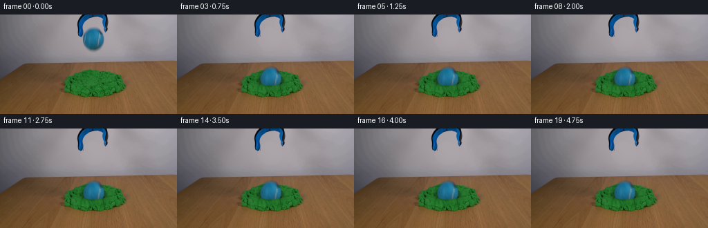
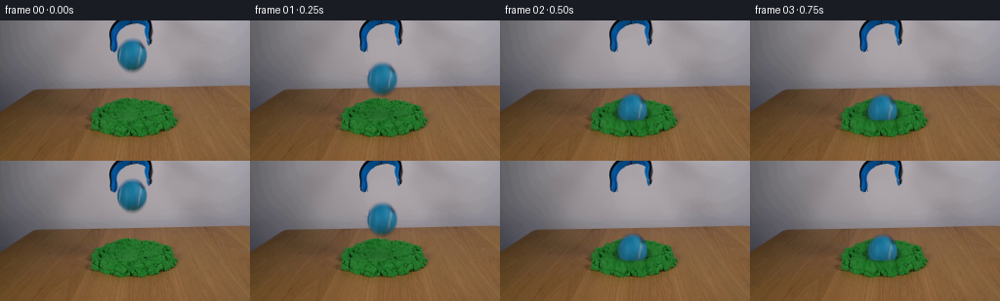
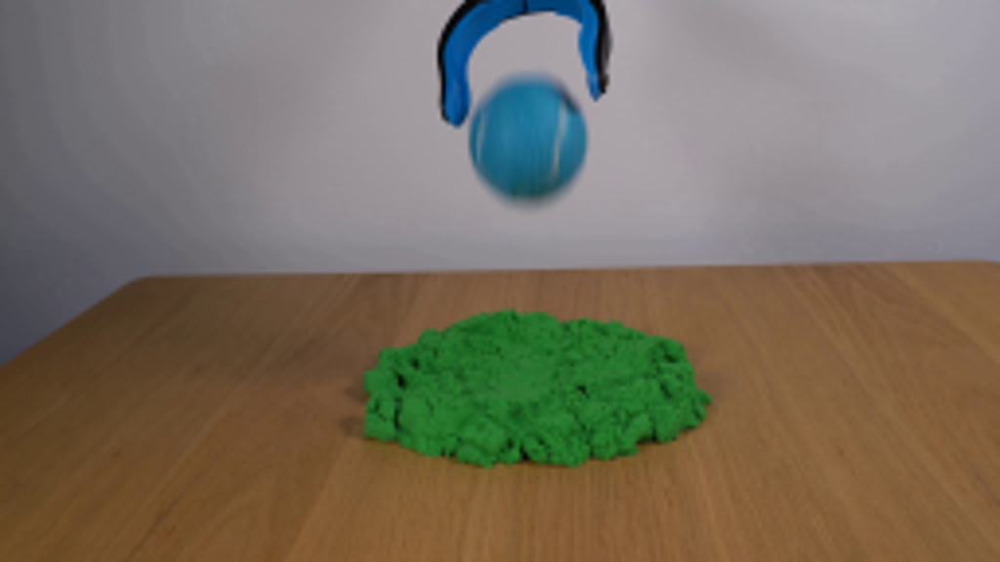
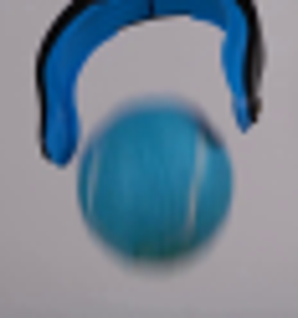
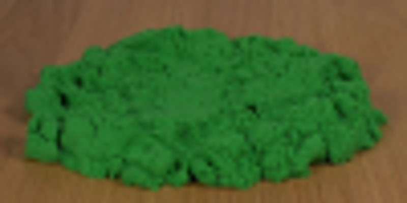
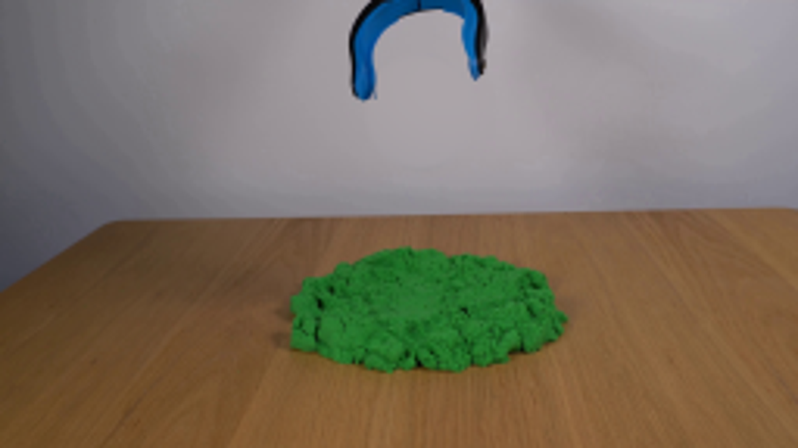
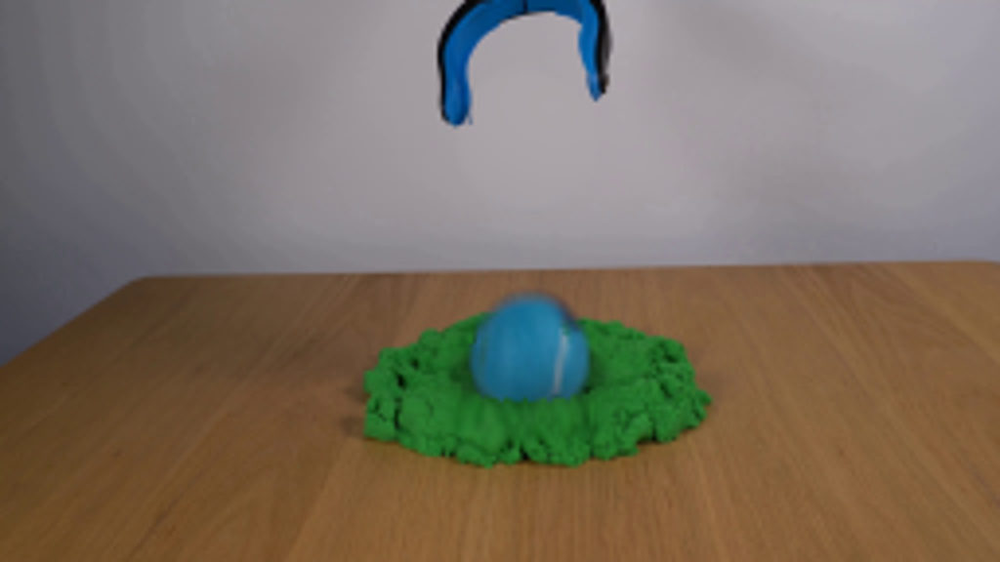

CODING AGENTS AS PIXEL WORLD MODELS
traex/GPT-6.1-Sol · 0017
点击播放 · 原生 RGB 像素
逐轮保存的候选
回放视频、检查图与代码变化。
每份候选均可单独播放。实际图片检查记录在下方工具轨迹中。
候选 01播放与检查图
点击播放 · 原生 RGB 像素


展开代码变化
--- 上一保存版本
+++ 本次保存版本
@@ -0,0 +1,115 @@
+from pathlib import Path
+import numpy as np
+from PIL import Image, ImageDraw, ImageFilter
+from scipy.ndimage import gaussian_filter, map_coordinates
+from scipy.special import erf
+import cv2
+import artifact_io
+
+ROOT=Path(__file__).resolve().parent
+H,W=144,256
+src=np.asarray(Image.open(ROOT/'first_frame.png').convert('RGB'),dtype=np.float64)
+y,x=np.mgrid[:H,:W]
+# Reconstruct only the small patch of wall revealed by the falling ball.
+wall_samples=((x>=87)&(x<=105)|(x>=165)&(x<=184))&(y<=62)
+features=np.stack([np.ones_like(x),x/256,y/144,(x/256)**2,(y/144)**2,x*y/(256*144)],-1)
+coef=np.linalg.lstsq(features[wall_samples],src[wall_samples],rcond=None)[0]
+wall=features@coef
+# The two jaws remain at their original position, above the released sphere.
+cx,cy=134.6,35.35
+rho=np.sqrt(((x-cx)/15.3)**2+((y-cy)/15.9)**2)
+remove=0.5*(1-erf((rho-1.19)/0.075))
+protect=((x<=120)&(y<=31))|((x>=148)&(y<=24))
+remove[protect]=0
+background=src*(1-remove[...,None])+wall*remove[...,None]
+# Recover the photographic blue felt and its pale curved seams, separating the
+# soft silhouette from the grey wall before translating the ball.
+alpha=np.clip((wall[...,0]-src[...,0])/132.0,0,1)
+alpha*=0.5*(1-erf((rho-1.13)/0.10))
+alpha[protect]=0
+alpha[(rho<.73)]=1
+alpha=gaussian_filter(alpha,0.24)
+ball=np.divide(src-wall*(1-alpha[...,None]), np.maximum(alpha[...,None],.02))
+ball=np.clip(ball,0,255)
+# A stable slight optical sharpening is used once the ball stops moving.
+ball_sharp=np.clip(ball+0.3*(ball-gaussian_filter(ball,(.65,.65,0))),0,255)
+
+# Only sand in the immediate contact region deforms; all other scene pixels
+# stay exactly the original photograph.
+sand=(src[...,1]>src[...,0]*1.32)&(src[...,1]>src[...,2]*1.32)&(y>=76)
+sand_soft=gaussian_filter(sand.astype(float),.5)
+impact_x,impact_y=135.0,96.0
+rng=np.random.default_rng(719)
+noise=gaussian_filter(rng.normal(0,1,(H,W)),.55)
+
+def sample(a, xx, yy):
+ if a.ndim==2:
+ return map_coordinates(a,[yy,xx],order=1,mode='constant',cval=0)
+ return np.stack([map_coordinates(a[...,i],[yy,xx],order=1,mode='constant',cval=0) for i in range(a.shape[-1])],-1)
+
+def frame_at(t):
+ # Accelerating free fall, followed by a damped, irreversible penetration.
+ if t < .315:
+ center_y=cy+392*t*t
+ deformation=0.
+ else:
+ dt=t-.315
+ center_y=74.25+18.1*(1-np.exp(-dt/0.057))
+ center_y+=0.65*np.exp(-dt/0.19)*np.sin(dt*25)
+ deformation=1-np.exp(-dt/.055)
+ center_x=cx+0.5*min(t/.55,1)
+ scene=background.copy()
+ if deformation>0:
+ dx=x-impact_x; dy=(y-impact_y)*1.48
+ rr=np.sqrt(dx*dx+dy*dy)+1e-6
+ push=2.0*deformation*np.exp(-((rr-17)/8)**2)
+ sx=x-push*dx/rr
+ sy=y-push*dy/rr/1.48
+ warp=sample(src,sx,sy)
+ local=deformation*sand_soft*np.exp(-((rr/32)**6))
+ scene=scene*(1-local[...,None])+warp*local[...,None]
+ # Concave cavity and contact shadow, with a mildly uplifted grainy lip.
+ e=np.sqrt((dx/19.7)**2+((y-96)/10.5)**2)
+ dark=(.32*np.exp(-(e/.95)**4)+.15*np.exp(-((e-.90)/.15)**2))*deformation*sand_soft
+ scene*=1-dark[...,None]
+ rim=np.exp(-((e-1.10)/.15)**2)*deformation*sand_soft
+ scene+=rim[...,None]*np.array([2.0,8.5,2.5])
+ # Tighten the contact shadow as the sphere descends toward the mound.
+ if center_y>52:
+ gap=max(0,74-center_y)
+ shadow=np.exp(-((x-center_x)/(16+gap*.25))**2-((y-96)/(5.4+gap*.04))**2)
+ amount=.22*np.exp(-gap/22)
+ scene*=1-(amount*shadow*sand_soft)[...,None]
+ srcx=x-(center_x-cx)
+ srcy=y-(center_y-cy)
+ a=sample(alpha,srcx,srcy)
+ rgb=sample(ball if t<.315 else ball_sharp,srcx,srcy)
+ if t<.315:
+ # Finite shutter during free fall: mild vertical motion blur.
+ a=gaussian_filter(a,(.64,.12))
+ prem=sample(ball*alpha[...,None],srcx,srcy)
+ prem=gaussian_filter(prem,(.64,.12,0))
+ scene=scene*(1-a[...,None])+prem
+ else:
+ scene=scene*(1-a[...,None])+rgb*a[...,None]
+ if deformation>0:
+ # Sand in front of the ball overlaps its submerged bottom; source
+ # grains are lifted into an irregular rim rather than a smooth disk.
+ dx=x-impact_x
+ edge=98.0+4.1*np.sqrt(np.maximum(0,1-(dx/17.9)**2))
+ edge+=.42*np.sin(dx*1.45)+.28*np.sin(dx*2.55+1)
+ front=(.5+.5*erf((y-edge)/.47))
+ front*=np.exp(-((dx/20.7)**8))
+ front*=np.exp(-((np.maximum(y-105,0)/8.5)**4))
+ front*=sand_soft*deformation
+ texture=sample(src,x-(dx/20)*.9,y+5.4*np.exp(-((y-101)/6)**2))
+ # The inner face of the freshly compressed rim is darker than its top.
+ rimshadow=.15*np.exp(-((y-edge-.6)/1.8)**2)
+ texture*=1-rimshadow[...,None]
+ # Use original untouched foreground beyond the very local collar.
+ scene=scene*(1-front[...,None])+texture*front[...,None]
+ return np.uint8(np.clip(np.round(scene),0,255))
+
+frames=np.stack([src.astype(np.uint8)]+[frame_at(i/4) for i in range(1,20)])
+artifact_io.save(frames,ROOT)
+Image.fromarray(np.uint8(np.clip(background,0,255))).resize((1024,576)).save(ROOT/'.tmp/background.png')
可观测工具轨迹
实际执行的命令与返回图片。
命令 1exit 0
/bin/bash -lc 'ls -la && cat prompt.txt && cat GENERATION_RULES.md'
命令 2exit 0
/bin/bash -lc "cat artifact_io.py && python - <<'PY'
from PIL import Image
im=Image.open('first_frame.png'); print(im.size); im.resize((1024,576)).save('.tmp/enlarged.png')
PY"命令 3exit 0
/bin/bash -lc "python - <<'PY'
import numpy as np
from PIL import Image
from scipy.ndimage import gaussian_filter
im=np.array(Image.open('first_frame.png'))
for y in [14,18,20,25,35,45,50,54,60,80,90,100]:
print(y, [(x,im[y,x].tolist()) for x in [116,120,125,135,145,150,154]])
PY"命令 4exit 0
/bin/bash -lc "python - <<'PY'
from PIL import Image
im=Image.open('first_frame.png'); im.crop((105,0,163,62)).resize((580,620)).save('.tmp/objects.png'); im.crop((87,73,187,123)).resize((800,400)).save('.tmp/sand.png')
PY"命令 5exit 0
/bin/bash -lc "python - <<'PY' import importlib.util for a in ['numpy','scipy','cv2','PIL']: print(a, bool(importlib.util.find_spec(a))) PY"
命令 6exit 0
/bin/bash -lc "cat > generate.py <<'PY'
from pathlib import Path
import numpy as np
from PIL import Image, ImageDraw, ImageFilter
from scipy.ndimage import gaussian_filter, map_coordinates
from scipy.special import erf
import cv2
import artifact_io
ROOT=Path(__file__).resolve().parent
H,W=144,256
src=np.asarray(Image.open(ROOT/'first_frame.png').convert('RGB'),dtype=np.float64)
y,x=np.mgrid[:H,:W]
# Reconstruct only the small patch of wall revealed by the falling ball.
wall_samples=((x>=87)&(x<=105)|(x>=165)&(x<=184))&(y<=62)
features=np.stack([np.ones_like(x),x/256,y/144,(x/256)**2,(y/144)**2,x*y/(256*144)],-1)
coef=np.linalg.lstsq(features[wall_samples],src[wall_samples],rcond=None)[0]
wall=features@coef
# The two jaws remain at their original position, above the released sphere.
cx,cy=134.6,35.35
rho=np.sqrt(((x-cx)/15.3)**2+((y-cy)/15.9)**2)
remove=0.5*(1-erf((rho-1.19)/0.075))
protect=((x<=120)&(y<=31))|((x>=148)&(y<=24))
remove[protect]=0
background=src*(1-remove[...,None])+wall*remove[...,None]
# Recover the photographic blue felt and its pale curved seams, separating the
# soft silhouette from the grey wall before translating the ball.
alpha=np.clip((wall[...,0]-src[...,0])/132.0,0,1)
alpha*=0.5*(1-erf((rho-1.13)/0.10))
alpha[protect]=0
alpha[(rho<.73)]=1
alpha=gaussian_filter(alpha,0.24)
ball=np.divide(src-wall*(1-alpha[...,None]), np.maximum(alpha[...,None],.02))
ball=np.clip(ball,0,255)
# A stable slight optical sharpening is used once the ball stops moving.
ball_sharp=np.clip(ball+0.3*(ball-gaussian_filter(ball,(.65,.65,0))),0,255)
# Only sand in the immediate contact region deforms; all other scene pixels
# stay exactly the original photograph.
sand=(src[...,1]>src[...,0]*1.32)&(src[...,1]>src[...,2]*1.32)&(y>=76)
sand_soft=gaussian_filter(sand.astype(float),.5)
impact_x,impact_y=135.0,96.0
rng=np.random.default_rng(719)
noise=gaussian_filter(rng.normal(0,1,(H,W)),.55)
def sample(a, xx, yy):
if a.ndim==2:
return map_coordinates(a,[yy,xx],order=1,mode='constant',cval=0)
return np.stack([map_coordinates(a[...,i],[yy,xx],order=1,mode='constant',cval=0) for i in range(a.shape[-1])],-1)
def frame_at(t):
# Accelerating free fall, followed by a damped, irreversible penetration.
if t < .315:
center_y=cy+392*t*t
deformation=0.
else:
dt=t-.315
center_y=74.25+18.1*(1-np.exp(-dt/0.057))
center_y+=0.65*np.exp(-dt/0.19)*np.sin(dt*25)
deformation=1-np.exp(-dt/.055)
center_x=cx+0.5*min(t/.55,1)
scene=background.copy()
if deformation>0:
dx=x-impact_x; dy=(y-impact_y)*1.48
rr=np.sqrt(dx*dx+dy*dy)+1e-6
push=2.0*deformation*np.exp(-((rr-17)/8)**2)
sx=x-push*dx/rr
sy=y-push*dy/rr/1.48
warp=sample(src,sx,sy)
local=deformation*sand_soft*np.exp(-((rr/32)**6))
scene=scene*(1-local[...,None])+warp*local[...,None]
# Concave cavity and contact shadow, with a mildly uplifted grainy lip.
e=np.sqrt((dx/19.7)**2+((y-96)/10.5)**2)
dark=(.32*np.exp(-(e/.95)**4)+.15*np.exp(-((e-.90)/.15)**2))*deformation*sand_soft
scene*=1-dark[...,None]
rim=np.exp(-((e-1.10)/.15)**2)*deformation*sand_soft
scene+=rim[...,None]*np.array([2.0,8.5,2.5])
# Tighten the contact shadow as the sphere descends toward the mound.
if center_y>52:
gap=max(0,74-center_y)
shadow=np.exp(-((x-center_x)/(16+gap*.25))**2-((y-96)/(5.4+gap*.04))**2)
amount=.22*np.exp(-gap/22)
scene*=1-(amount*shadow*sand_soft)[...,None]
srcx=x-(center_x-cx)
srcy=y-(center_y-cy)
a=sample(alpha,srcx,srcy)
rgb=sample(ball if t<.315 else ball_sharp,srcx,srcy)
if t<.315:
# Finite shutter during free fall: mild vertical motion blur.
a=gaussian_filter(a,(.64,.12))
prem=sample(ball*alpha[...,None],srcx,srcy)
prem=gaussian_filter(prem,(.64,.12,0))
scene=scene*(1-a[...,None])+prem
else:
scene=scene*(1-a[...,None])+rgb*a[...,None]
if deformation>0:
# Sand in front of the ball overlaps its submerged bottom; source
# grains are lifted into an irregular rim rather than a smooth disk.
dx=x-impact_x
edge=98.0+4.1*np.sqrt(np.maximum(0,1-(dx/17.9)**2))
edge+=.42*np.sin(dx*1.45)+.28*np.sin(dx*2.55+1)
front=(.5+.5*erf((y-edge)/.47))
front*=np.exp(-((dx/20.7)**8))
front*=np.exp(-((np.maximum(y-105,0)/8.5)**4))
front*=sand_soft*deformation
texture=sample(src,x-(dx/20)*.9,y+5.4*np.exp(-((y-101)/6)**2))
# The inner face of the freshly compressed rim is darker than its top.
rimshadow=.15*np.exp(-((y-edge-.6)/1.8)**2)
texture*=1-rimshadow[...,None]
# Use original untouched foreground beyond the very local collar.
scene=scene*(1-front[...,None])+texture*front[...,None]
return np.uint8(np.clip(np.round(scene),0,255))
frames=np.stack([src.astype(np.uint8)]+[frame_at(i/4) for i in range(1,20)])
artifact_io.save(frames,ROOT)
Image.fromarray(np.uint8(np.clip(background,0,255))).resize((1024,576)).save(ROOT/'.tmp/background.png')
PY
python generate.py"命令 7exit 0
/bin/bash -lc "command -v ffmpeg || true; python - <<'PY'
from PIL import Image
import numpy as np
Image.open('frames/02.png').resize((1024,576)).save('.tmp/settled.png')
a=np.load('pixels.npz')['pixels']; f=np.array(Image.open('frames/00.png')); s=np.array(Image.open('first_frame.png')); print('Saved tensor:',a.shape,a.dtype,'First frame identical:',np.array_equal(s,f))
PY"视觉工具实际返回图片 1

视觉工具实际返回图片 2

视觉工具实际返回图片 3

视觉工具实际返回图片 4

视觉工具实际返回图片 5

视觉工具实际返回图片 6

保存候选 1 份；完成命令 7 次；可验证图片返回 6 张。原始 API 响应与完整日志保留在本地。